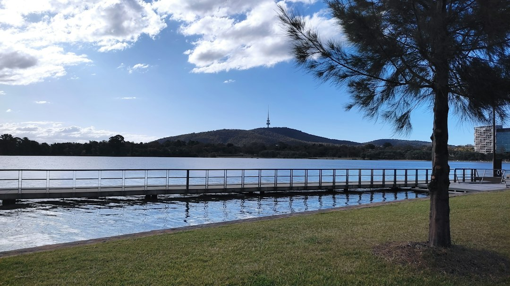

For homeowners comparing retaining walls canberra options, the practical starting point is site evidence: level change, water behaviour, access, nearby structures and the approval questions that shape scope.
Retaining Walls Canberra Explained
Retaining Walls Canberra frames the first decision around site conditions rather than a stock wall system. Before comparing faces, record what the wall must retain, the approximate height and length, whether a driveway, building, fence, steep bank or second wall sits nearby, and what changes after rain.
That information affects more than appearance. The source guide treats load, level change, drainage, access, engineering and approval inputs as connected items. A straight garden terrace can be a different conversation from a boundary wall with poor access or a wall below other structures.
- Photograph the wall or proposed location from both ends where safe.
- Note cracking, bulging, rot, corrosion, water marks and lean if the wall already exists.
- Describe access for materials, machinery and spoil movement.
- Ask where collected water can lawfully and practically discharge.
Choosing A Wall System
The published options separate wall choice by structure, landscape intent and site constraints. Concrete sleeper systems are described for durable garden, boundary and level-change work. Timber sleeper options are positioned for suitable lower garden terraces, stepped beds and straightforward landscape briefs. Reinforced block walls are presented for engineered loads, crisp finishes and integrated landscape structures.
Stone, boulder and gabion walls are more site-led. The source describes stone and boulder retaining as suitable where mass, drainage and access suit the system, while gabion baskets rely on correct foundations and filter separation. Those descriptions point to a quote conversation, not a universal ranking. The right question is which system matches the retained load, water path, space, finish expectations and approval pathway.
For another crawlable version of the same topic, see this Canberra retaining wall planning guide.
Approval And Drainage Checks
The ACT checks in the source guide are deliberately split into building approval, development approval and stormwater easement questions. Height alone is not presented as enough to answer approval needs. Location, exemption conditions, easements, nearby structures and the actual geometry can all change what should be checked before work starts.
Drainage is treated as part of the wall brief, not a late add-on. Aggregate, filter separation and a subsoil drain only solve the right problem when the site also has a lawful, practical discharge route. That is why a useful enquiry includes water symptoms, the intended discharge path and any easement concern, instead of asking only for a wall face and length.
If the proposal is near a stormwater easement, the source guide says a site plan and special engineering may be required so footings clear and do not load the stormwater asset. That is a specific question to raise early, especially before selecting a system that needs deeper footings or heavier construction access.
Repair Or Replacement Signals
A leaning or damaged wall should be described carefully before anyone assumes a repair will solve it. The source guide lists possible drivers including water pressure, decayed timber, corroded posts, insufficient embedment, changed loads and ground movement. Those causes point to different scopes, so visible lean may not explain the whole problem.
Useful notes include when the movement was first noticed, whether it worsens after rain, what sits above the wall, and whether cracking, bulging, rot, corrosion or water marks are visible. Do not excavate beside an unstable wall to investigate it yourself. Photos and measurements can still give a contractor enough context to discuss the next step without disturbing the wall.
Who This Applies To
This guide is most relevant to Canberra owners planning a new retaining wall, replacing a failing wall, or trying to understand whether a quote needs engineering, drainage design or approval input. It also suits landscape-led projects where the wall finish matters, provided the first checks still cover retained load, water movement and access.
It is less useful as a price shortcut because the source page does not publish fixed prices. Instead, it asks for suburb or postcode, dimensions, access constraints, drainage notes and photos so the scope begins from the real site. That evidence helps separate a simple landscape brief from a project where approval, easement or engineering questions should be resolved before construction details are locked in.
- Record the site. Write down retained height, wall length, nearby structures, access limits and visible drainage symptoms before asking for a quote.
- Choose likely systems. Compare concrete sleeper, timber, reinforced block, stone, boulder and gabion options against the site conditions rather than appearance alone.
- Check approvals. Ask whether building approval, development approval or stormwater easement issues apply to the actual wall geometry and location.
- Send evidence. Provide suburb or postcode, photos, dimensions and a plain description of what happens after rain.
| Question | Repair discussion | Replacement discussion |
|---|---|---|
| What changed? | Movement after rain, local cracking or visible corrosion may shape the first assessment. | Changed loads, failed materials or wider ground movement may push the scope beyond patching. |
| What evidence helps? | Photos from both ends, notes on water marks and safe visible defects. | Dimensions, access notes, nearby structures and drainage symptoms. |
| What should be checked? | Whether the visible defect is isolated or linked to water, posts or embedment. | Whether engineering, approval or stormwater easement questions affect the new wall. |
This guide covers Canberra retaining wall planning, system selection, drainage notes, repair evidence and approval questions grounded in the supplied source guide.